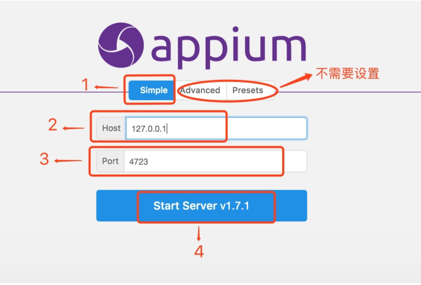

Appium环境搭建
学习目标
- 掌握appium的环境搭建
1. Appium 背景介绍
1.官网：www.appium.io,由SauceLab公司开发
2.Appium是由nodejs的express框架写的Http Server
Appium使用WebDriver的json wire协议，
来驱动Apple系统的UIAutomation库、Android系统的UIAutomator框架
2. appium安装的2种方式
方式1. Appium 桌面客户端安装
安装步骤
- 运行appium-desktop-Setup-1.2.7.exe，默认安装即可
- 启动客户端，按图⽚步骤 1 -> 2 -> 3 -> 4 设置

3.启动成功如下图:

方式2. Appium 命令行安装
2.1 安装nodejs
nodejs:官网下载地址: https://nodejs.org/en/download/
安装完成后 命令行运行npm或node -v 来查看是否安装成功,如下图:

2.2 安装cnpm
npm install -g cnpm --registry=https://registry.npm.taobao.org
npm国内一般被墙，所以选择淘宝镜像安装,官网:http://npm.taobao.org
2.3 cnpm安装appium
命令: cnpm install -g appium
如下图:

2.4 启动appium服务
启动服务命令:appium
启动成功如下图:

3. Appium-python库安装
我们使用Python语言编写脚本,所以要安装appium的python库
安装命令: pip install Appium-Python-Client